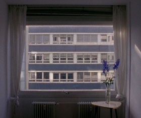

21,3°C

Helena Wittmann – Deutschland 2014 – 16 Min.
S: Helena Wittmann
Mit Luise Donschen
16mm – deutsch
HFBK-Filmpreis der Kulturbehörde Hamburg 2014
Ein Fenster. Eine gegenüberliegende Fensterfassade. Ein Raum. Blumen. Luise und ein Anruf. Eine Action-Szene. Eine Baustelle. Ein Musiker. Die Raumtemperatur beträgt 21,3°C. – Internationales Kurzfilmfestival Hamburg
Montag 13.10. 20:30 Uhr Werkstattkino
Helena Wittmann, geb. 1982 in Neuss. Kunststudium in Hamburg.
Filme: Heute war die Luft 2009 – Mimikry 2009 – Kreisen 2011 – Wildnis 2013 – 21,3°C 2014